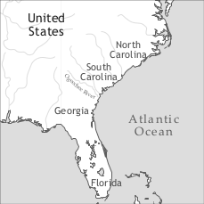

by Thomas B. Klein

Gullah can be viewed as the only English-lexified creole language spoken indigenously in the continental United States. The other indigenous creole languages in the US are French-lexified Louisiana Creole (see Neumann-Holzschuh & Klingler) and Hawai‘i Creole (see Velupillai). The number of speakers is difficult to assess. Gullah is not covered in US census figures. Some elders are monolingual, although the number given in the information box is a high estimate. The West African languages in the list figure prominently in the texts, personal names, and other words collected by Turner ([1949] 2002). Some of these languages may well be late arrivals in the contact scenario.
The name for the language varies by location. The use of Gullah as an autoglossonym has expanded since the 1960s, but speakers in the state of Georgia (Bailey 2000: 5) and in areas of South Carolina prefer the name Geechee. Both names have also been used derogatively. The label Sea Island Creole is rarely used outside certain formal written contexts. The Gullah-Geechee Heritage Corridor designated by the US Congress in 2006 delineates the core of Gullah territory as coastal South Carolina and Georgia plus adjacent areas in neighbouring states. This matches the former rice-growing area in the coastal southeastern United States mapped in Smith (1985).
Gullah speakers trace their heritage to Africans who were taken as captives from West Africa and the Caribbean to the coastal South in colonial America and the early United States. The South Carolina colony was first settled by the British from Barbados in small cohorts of whites and enslaved blacks in 1670. Thus, blacks arrived via the Caribbean at first, but soon also from Africa. Blacks were the majority of the population in South Carolina by the first half of the 18th century (Wood 1974). Slavery was banned in Georgia in 1734 just after the state was founded in 1733, but the potential for profits from the cheap labour proved overwhelming (Blaustein & Zangrando 1991: 26). Slaves were first moved from South Carolina to Georgia, but captives from Africa also arrived soon. By 1776 Georgia had as many black slaves – around 16,000 – as white people (Smith 1985: 22). Direct transfer from Africa continued through the ante-bellum period and long after the slave trade from overseas was officially outlawed in the United States in 1808. The Wanderer landed a final cargo of 400 African slaves off the coast of Jekyll Island, Georgia in 1858 – just before the Civil War (Wells 1967). Field order Nr. 15 issued by the Union General William T. Sherman in 1865 distributed land to newly freed persons which they had worked as slaves, but the order was rescinded by President Andrew Johnson in the same year (Foner 1988). Freedmen began to acquire land soon thereafter, and such lands were a foundation for Gullah and Geechee homesteads up to the present.
Charles Spalding Wylly, descendant of plantation owner Thomas Spalding of Sapelo Island, Georgia, presents a racist and disturbing, yet instructive memoir on the period between 1787 and 1806. It is worth quoting his narrative concerning the acquisition of the socially dominant language during slavery days at some length because it exists only as an unpublished typescript.
[M]en and women fresh from Africa would […] be taken into the life of a family where in all probability there were not three white men to three hundred of their own race. […] The newly purchased were transferred at once to the plantation. Here always would be found a number of men and women acquired in former years who belonged to the same race, frequently of the same tribe and speaking the same dialect, or at least capable of making themselves understood.
To one of these, chosen for his ability to command and his fluency in speech, would be given the […] men, with the right of issuing food when and where he pleased, or to retain it and not call for the daily ration. To a woman with the same gifts the […] women would be assigned, and to a third the boys and girls. […]
The education thus started progressed rapidly. The reward was good food, given in plentiful profusion […] which was issued daily at the barns on the call only of the preceptor. He lived with them, talked and walked with them. After a tutelage of perhaps three to five months they were assigned to work requiring not skill but only manual strength […] – still under the eyes of their teacher […] In twelve months they were generally, as it were termed, “tamed” , and had acquired enough of the English language to be understood and to understand when spoken to.
The second year of the “new” negro’s development usually found him with a gang of thirty assigned to the regular labor in the fields. One-third of this gang would be men and women of his own race who had graduated years before from the same school that he was now entering. Here commenced the task of imitation, and long before the expiration of a year he had learned many things, for his teacher, called locally his driver, was always near to direct, instruct and command. He had been taught […] to come and go when told to do so, to stand still when a white man spoke to him, and in most cases by the end of the second year the “Jack, new negro” that had marked his place and value on the plantation books had been altered into “Jack, African born” [.] (Wylly 1915: 39-41)
This passage lays out that adults and children who had arrived from Africa were targeted to learn English as a foreign language from fellow slaves, not whites. L2 learning was forced, as failure to progress resulted in the withholding of food. The process took a considerable amount of time – around two years – and was carefully planned by white owners. Opportunity for substrate influence was extensive because Africans often outnumbered whites by a ratio of 100 or more to 1 and because the newcomers were placed with speakers of mutually intelligible varieties of African languages who were available in the new environment over an extended period of time.
It has been posited that Gullah was identifiable as a variety distinct from colonial American English since about 1750, just after blacks had become the majority in South Carolina. A form of the label Gullah appeared for the first time in print in the name of Golla Harry – a runaway slave who was advertised in the South Carolina Gazette on May 12, 1739. In the early 19th century, “Gullah” Jack Pritchard emerged as a prominent figure. He was instrumental in the 1822 Denmark Vesey slave rebellion in the area of Charleston, South Carolina, and was recorded to be from an area in West Africa referred to by English colonists as Angola. The frequently stated etymology that the name Gullah is an adaptation of Angola is joined by another which traces it to the Gola people of Sierra Leone. It can be pointed out that other linguistic groups by this name are also known in the modern West African states of Liberia, Nigeria, Senegal, Guinea, and Guinea-Bissau. Furthermore, there are Gala and Ngala people in Nigeria. In other words, multiple, convergent etymologies are possible to account for the label Gullah. Geechee is said to derive from the Kisi or Kissi people of Sierra Leone; varieties by this name are also found in Liberia. A second etymology claims that the name derives from the Ogeechee River in Georgia; it is generally rejected by the Geechee community, however.
Gullah is part of a linguistic cluster stemming from the African diaspora across the Atlantic. It is thus not surprising that structural affinities with other English-lexified creoles in the Caribbean and West Africa are evident alongside distinctive features. Derivative varieties of the language which have arisen via historical migrations by Gullah and Geechee people within the US and to the Caribbean can be found in rural areas in Texas and Oklahoma, in the interior of Florida (Afro-Seminole), and on Middle Caicos in the Turks and Caicos Islands.
The distinctiveness of Gullah in the American linguistic landscape has sparked intense curiosity from outside since the 19th century. Few whites acquired proficiency in the language, although it is apparent that some were able to understand and reproduce it with varying degrees of competence in part because of close contact with black caregivers and playmates in early childhood. Published adaptations of Gullah story-telling – for example, in a column by Ambrose E. Gonzales in The State (Columbia, SC) – had become a literary and commercial fixture by the late 19th century. Attention by academics and other writers intensified at around the same time, but treatments until the 1920s viewed Gullah primarily as an aberrant form of English.
The work of Lorenzo Dow Turner (1890–1972) – America’s first black professional linguist – marked a decisive shift in the scholarly view of Gullah. Turner sought to amass evidence of its African heritage. In the process, he described grammatical features of Gullah for which he saw counterparts in West African languages. He found elders in the coastal areas of South Carolina and Georgia who could recite African songs and could remember other traces of West African languages. He collected about 4,000 personal names in the community which he was able to trace to African origins. The narratives Turner presented are the first original voices by Gullah community members to appear in print. Linguistics researchers have applied modern methods to the study of Gullah language since the 1960s. The recent addition of native voices (Bailey 2000, Campbell 2008) to Geechee and Gullah scholarship is a welcome trend. Professional linguists native to the community have yet to emerge.
Modern Gullah is in a continuum relation with African American Vernacular English, Southern American English, and Standard American English, the latter particularly for reading and writing and in the schools. Most Gullah speakers are also proficient in some or all of these other varieties. Gullah is a community language which is typically not spoken to outsiders. The present-day community has to contend with out-migration and loss of ancestral lands because of coastal development. There is some back-migration, particularly of retirees, but these individuals typically use a palette of (decreolized) varieties of English when they return.
There is evidence that children and adolescents still acquire significant components of the language, particularly through extensive contact with the oldest generation. Members of the parent generation tend to hone their control of varieties of English, in particular when they move elsewhere for professional reasons. Many members of the community are concerned that the language is endangered and might die out soon. Some members of the Gullah community and outsiders who see Gullah as “broken English” tend to cautiously welcome this trend. The future state of Gullah will to a significant degree depend on how well a semblance of traditional social networks can be maintained.
Gullah pride toward outsiders is an important recent development and serves as a compass for grass-roots community efforts. The designation of the Gullah-Geechee Heritage Corridor, the effort of the eponymous Commission, and the work of several community associations and societies has facilitated political and cultural clout.
Gullah has been nearly exclusively a spoken language to date. The appearance of written materials in the language by native speakers over the last few years is noteworthy. The Gullah/Geechee Nation organization produces bilingual media in Gullah and English including blogs, web pages, and the newsletter De Conch. Perhaps the most significant linguistic event in the community has been the completion of the translation of the King James Version of the New Testament as De Nyew Testament – widely known as the Gullah Bible – by a native speaker panel in South Carolina (Sea Island Translation Team 2005). It is the first book in Gullah by native speakers for native speakers. This bilingual publication has been widely embraced in the community, although it has also garnered some criticism. It is reasonable to predict that the overt and covert linguistic prestige associated with the Gullah Bible could help support a recreolization of Gullah speech, at least in certain language domains, e.g. religious services.
|
Table 1. Vowels |
|||
|
front |
central |
back |
|
|
close-high |
i |
u |
|
|
open-high |
ɪ |
ʊ |
|
|
close-mid |
e |
ə |
o |
|
open-mid |
ɛ |
ʌ |
ɔ |
|
open |
a |
ɑ |
|
The discussion in Turner ([1949] 2002), Jones-Jackson (1978), and Weldon (2004) converges on the twelve core monophthongal vowel phonemes displayed in Table 1. /ɑ/ occurs frequently as rounded low back [ɒ]. Modern Gullah has the diphthongs /ɑɪ/, /ɑʊ/, and /ɔɪ/. In traditional Gullah, etymological /ɔɪ/ appears as /ɑɪ/, e.g. ɐɪʃta ‘oyster’. The diphthongal nucleus is raised before voiceless obstruents as in bɐɪt ‘bite’ and hɐʊs ‘house’. The phonemes in Table 2 represent consonants of traditional Gullah described in Turner ([1949] 2002).
|
Table 2. Consonants |
|||||||
|
bilabial |
alveolar |
post-alveolar |
palatal |
velar |
glottal |
||
|
Plosive |
voiceless |
p |
t |
c |
k |
||
|
voiced |
b |
d |
ɟ |
g |
|||
|
Nasal |
m |
n |
ɲ |
ŋ |
|||
|
Trill |
|||||||
|
Fricative |
voiceless |
ɸ |
s |
ʃ |
h |
||
|
voiced |
β |
z |
|||||
|
Flap Approximant |
ɾ ɹ |
j |
|||||
|
Lateral approximant |
l |
||||||
The bilabial, alveolar, and velar plosives have several types of allophones, including ejective [k’] (Turner [1949] 2002). There is k/g palatalization before a in Gullah as in English-lexified Caribbean creoles. Turner ([1949] 2002) transcribes this as [c] as in ca ‘carry’ and [ɟ] as in ˈɟadn ‘garden.’ The auditory impression is closer to [kj] and [gj], though. The English-like affricates [tʃ] and [dʒ] are described as dominant in Jones-Jackson (1978), whereas the corresponding phones [c] and [ɟ] are dominant according to Turner’s description. English [v] and [w] are reported as merged to the bilabial fricative [β] in Turner ([1949] 2002:25), but are transcribed as w in Turner’s texts (pp. 260–288). Turner also notes that English f is [ɸ] in Gullah, but uses the former symbol in his transcribed texts. Modern speakers tend to have an English-like system with [f, v, w]. English [θ] and [ð] appear categorically as [t] and [d], respectively. /ʃ/ seems phonemic even though Jones-Jackson (1978) describes [ʃ] as an allophone of /s/. The palatal nasal /ɲ/ appears as phonemic in Turner’s material.
The velar nasal appears in the place of etymological /n/ after correlates of English /ɑʊ/ in older and modern Gullah as in dɑʊŋ ‘down’ and gɹɑʊŋ ‘ground’. An analogous phonotactic constraint can be observed in other Atlantic English-lexified creoles. The liquids /l/ and /ɹ/ are distinct, but there is generally no post-vocalic /ɹ/. Thus, Gullah is a non-rhotic variety. Labio-velars are not counted as phonemes because unambiguous occurrences are found in only three items in Turner ([1949] 2002); the two words in (1 a.) are also examples of ideophones.
(1) a. gbaŋ or kpaŋ glossed as ‘tightly’ on p. 241 in Turner ([1949] 2002), but as ‘bang’ on p. 257
lkpaŋga ‘the remains after some destructive force’
b. gbla ‘near’
Prenasalized consonants appear in the African lexicon of Gullah, but they seem best interpreted as biphonemic, and hence they are not part of the inventory of individual phonemes.
Tone is transcribed in only a few of the Gullah versions of African personal names listed in Turner ([1949] 2002), e.g. ko1fi3 ‘name given to a boy born on Friday’. It plays no role elsewhere. Gullah allows quite complex syllable structures, with up to three consonants in the onset and two in the coda, e.g. CCCVCC strent ‘strength’, but etymological final -t/-d does not appear if it would agree in voicing with the preceding consonant, e.g. bɹɛs ‘breast’. Initial clusters can be broken up by vowel insertion in the dialect described in Jones-Jackson (1978) as in sitɪk ‘stick’. The core syllable template is (C)(C)V(C) (Klein 2009).
There is no official orthography for Gullah, although the Gullah Bible might exert a standardizing influence in the near future. The examples below are presented as they appear in the sources.
Marking of natural gender through compounding in nouns has been reported for animals.
(2) a. man chicken ‘rooster’
b. ooman hog ‘sow’ (Turner [1949] 2002: 230)
Nominal plural can either be indicated by English -s or forms of irregular plural, by the postposed plural marker dem, or remain unmarked.
(3) a. pieces ‘pieces’
b. ɒl tɪŋ ‘all things’
c. twenty-four bed ‘twenty-four beds’
d. de leader dem ‘the leaders’
Postposed dem can also be used for the associative plural as in Sara dem ‘Sarah and her friends/family.’ Non-specific, generic NPs are typically not overtly marked.
(4) Dog eat scrap. (author’s field research)
‘Dogs eat scrap.’
Specific NPs are marked by overt articles: the definite article de can precede sg and pl nouns; the indefinite article is a. Cardinal (wʌn, tu, ʃɹi, fo, …) and ordinal numerals (fʌs, sɛkən, …) precede the noun.
|
Table 3. Personal pronouns and adnominal possessives |
|||
|
subject |
object |
adnominal possessives |
|
|
1sg |
a |
me |
me |
|
2sg |
ya |
ya |
ya |
|
3sg |
e |
um |
e |
|
1pl |
we |
we |
we |
|
2pl |
oona |
oona |
oona |
|
3pl |
dey |
um/dem |
dey |
The entries in Table 3 represent the pronoun system in De Nyew Testament (Sea Island Translation Team 2005). Prominent features are the absence of gender distinctions in the third person singular and the different number forms in the second person; also note the Africanism oona for the 2pl pronoun. There are just a few case distinctions. Systems reported elsewhere include variable gender distinctions and dem for dey. The morpheme –se(l)f is added to the possessives to form reflexives: esef, oonasef, etc.
Gullah has two possessive noun constructions. Juxtaposition shows possessor-possessum order as in Sister Campbell house ‘Sister Campbell’s house.’ The other has an intervening of and shows possessum-possessor order as in foot of de tree ‘foot of the tree.’
The form of adjectives is invariant. They precede the noun when used attributively as in a great big house ‘a great big house.’ Predicative adjectives can be used without copula.
The comparative can be marked by pas ‘surpass’.
Comparative can also be expressed by more than.
(7) He big more than you.
‘He is bigger than you.’ (Cunningham 1992: 139)
Turner ([1949] 2002: 214) reports mo na ‘more than’ for the comparative and dɪ moɹɪs ‘the morest’ for the superlative. Other strategies are the English-type suffixes -ə as in bɪgə ‘bigger’ and -ɪs as in minɪs ‘meanest’.
Tables 4a-d provide an overview of the forms of Gullah tense/aspect and mood markers, the meanings they can encode, and the relative order and possible combinations which have been observed in Cunningham (1992), Frank (2007), Hopkins (1994), Mufwene (2004), and Turner ([1949] 2002). There are probably more combinations. All markers precede the verb.
|
Table 4a. Tense/aspect markers |
|
|
form |
meaning |
|
been/bin [bɪn] |
anterior/past |
|
duh/da [də]; also a [ə] |
progressive/durative/habitual/iterative/perfective |
|
duhz [dəz] |
habitual (repeated activities) |
|
done [dʌn] |
perfective |
|
be [bi] |
consuetudinal (repeated states of affairs) |
|
Table 4b. Mood markers |
|
|
form |
meaning |
|
can, could, may, must, might, would |
as in varieties of English |
|
going, g(w)ine, ga [gə] |
future |
|
fa/fə |
intention/obligation |
|
Table 4c. Tense/aspect/mood markers: Relative order and combinations |
|
|
Relative order |
Combinations |
|
perf + ant + prog/fut |
done + been; been + a; been + gwine |
|
Table 4d. Mood markers: Combinations |
|
may + could/would/will/can |
|
might + could/can |
|
must + be + coulda |
Concerning lexical aspect, Mufwene (2004: 365) observes: “When the verb combines with no tense marker, reference is to the past or to a habit if it is non-stative but most likely to the present if it is stative, especially when the contextual domain does not suggest otherwise.“
The use of the TMA markers listed in Tables 4a-d is illustrated in the following examples. The anterior/past tense marker been is exemplified in (8).
The progressive/durative, habitual, and iterative uses of da can be gleaned from (9)-(11), respectively.
Hopkins (1994) shows that da can encode the perfective with stative verbs as in (12).
Duhz encodes the habitual as well, as in (13).
Done is frequently observed as the perfective aspect marker as in (14).
Consuetudinal aspect is expressed by be in (15).
The future and intention/obligation markers are illustrated in (16) and (17), respectively.
Combinations of tense/aspect/mood markers are shown in (18)-(21).
Verbal negation in Gullah is expressed through no [nə], ain(’t) [ẽ], don(’t) [dõ], or n(’t) [n] attached to TMA markers as illustrated in (22)-(25).
The predicative copula is encoded through forms of be or zero.
The equative copula is also expressed through forms of be or by zero.
The Gullah locative copula is deh [dɛ].
Serial verb constructions are attested in all extant sources. Take can serve as an instrumental serial verb.
Resumptive pronouns with this construction are judged to be ungrammatical.
(33) *E take stick kill um wid um.
3sg take stick kill 3sg.obj with 3sg.obj (author’s field research)
Motion to unnamed or named places can be expressed through go as a serial verb.
Serial give in second position occurs to introduce a recipient.
Movement toward the speaker or deictic centre can be encoded through come as a directional serial verb.
Reduplication plays a role in Gullah. Turner ([1949] 2002: 235) observes stem reduplication in personal names such as ˈteŋteŋ and ˈkusukusu and supplies several examples of total reduplication serving augmentative function.
(38) ɲam ‘to eat’ ˈɲamɲam ‘to devour’
tru ‘true’ ˈtrutru ‘very true’
Word order in declarative and subordinate clauses as well as in polar questions is SVO. The objects in ditransitive clauses occur in the order Oindir Odir and are not marked by prepositions (double object construction).
Turner ([1949] 2002: 209) states that there is no voice distinction in Gullah, but Cunningham (1992) found that passives can be expressed through the appearance of non-agentive subjects with verbs which otherwise require agents as subjects.
(40) Both can use.
‘Both can be used.’ (Cunningham 1992: 97)
Reflexivity is expressed through reflexive pronouns.
The imperative is formed by the bare verb in initial position. Don(’t) is put in initial position before the bare verb to express the prohibitive/exhortative.
Initial positive do can occur in entreaties.
Turner ([1949] 2002: 253) reports that questions can be marked by rising or level tone intonation. Question words in content questions are fronted.
The question marker ainty [ɛnti] can appear in initial and final position.
Focus can be achieved by cleft sentences which are marked by initial duh and through the construction N the one wa ___ .
Forms corresponding to and, but and or serve as coordinating conjunctions. Quotative say is common.
The complementizer sɛ (< say) can be used with verbs of saying and cognition.
Adverbial subordinators include befo ‘before’, if ‘if’, weh ‘where’ and when ‘when’. There are three subordinators with the meaning ‘because’: ke, fə, and (be)cause.
Relative clauses are postnominal and do not show any change in word order. They are marked through weh, wa/what, or zero and require a resumptive pronoun when they function as possessives.
The lexical items sabe ‘know’ and pickney ‘child’ and creole compounds such as eyewata ‘tears’ and dayclean ‘dawn’ are attested in Gullah. Africanisms include buckra ‘white man’, ɲam ‘to eat’, and oona ‘2pl’. Slavery could be referred to by the innovative compound rebel time (Klein 2007). In addition to the personal names, Turner ([1949] 2002) also found about 200 African-derived words used in conversation and in stories, songs, and prayers.
Acknowledgments
I wish to thank Cornelia Walker Bailey for her data work with me and Magnus Huber for useful editorial comments. All responsibility for errors is mine.